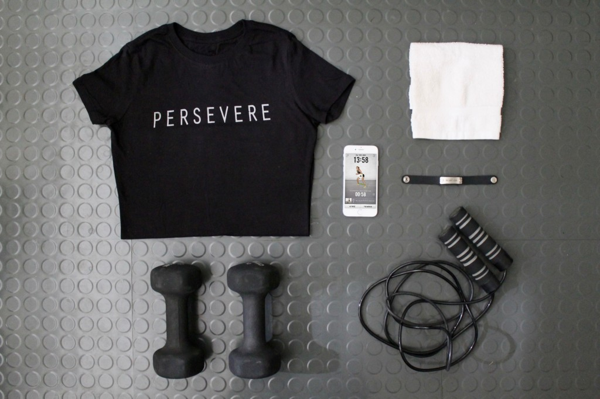

Your BMI categorizes you as
overweight
Workout plans

For Men:
Exercise Plans for Obese Men
Fat Burning Workout for Overweight Men
Best Workouts for Overweight Beginners
For Women:
Bodyweight Workout for Obese Women
Best Exercises for Overweight Women
5-Minute Fat-Blasting Workout
Diet Plans
For Men:
Ultimate Weigt-Loss Diet Plan for Men
Eating Plan to Burn Fat and Lose Weight
4-Week Fat-Burning Meal Plan
For Women:
Women's Nutrition Plan to Get Toned and Lose Fat
Easy Eating Plan for Weight Loss
Meal Plans and Fat Loss Diet
Click
here
for some workout videos!